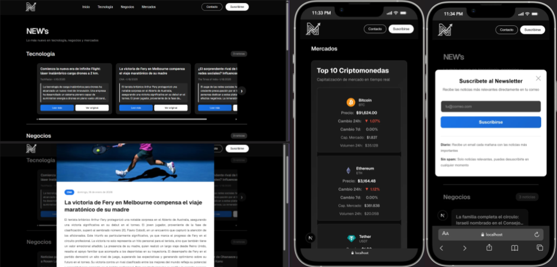
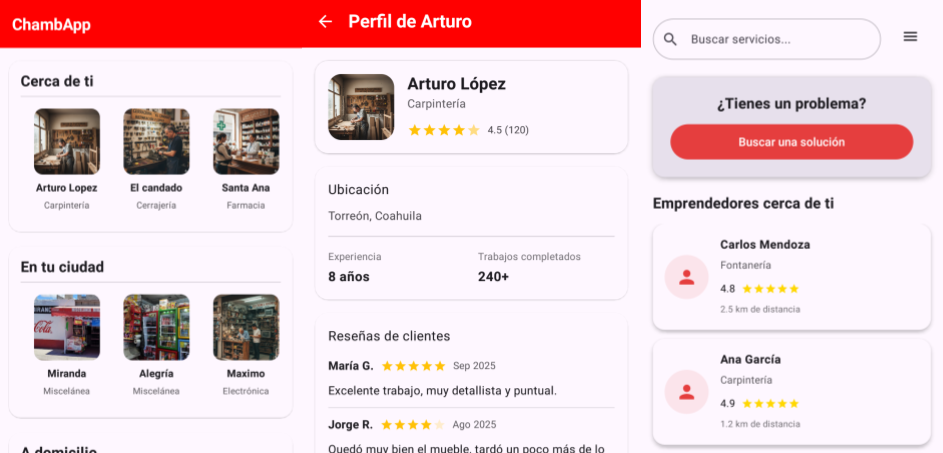
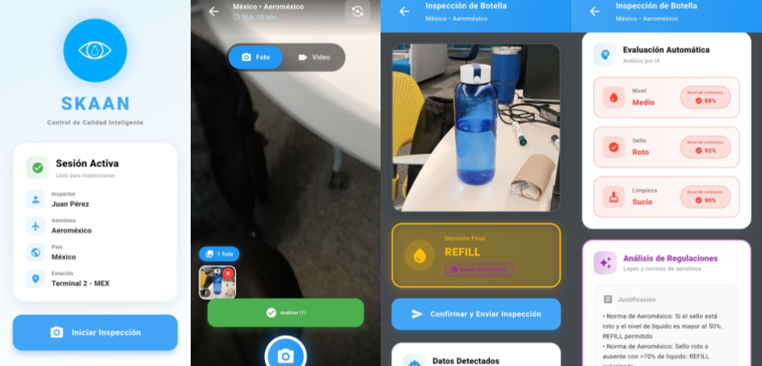
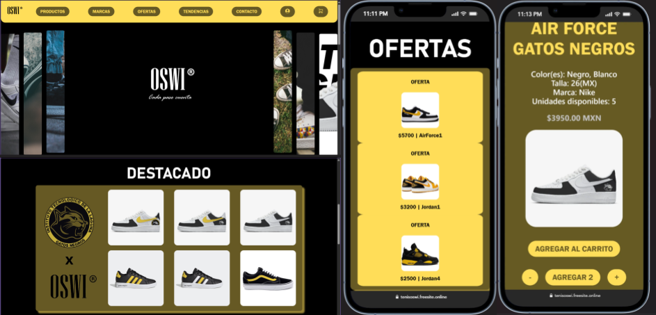
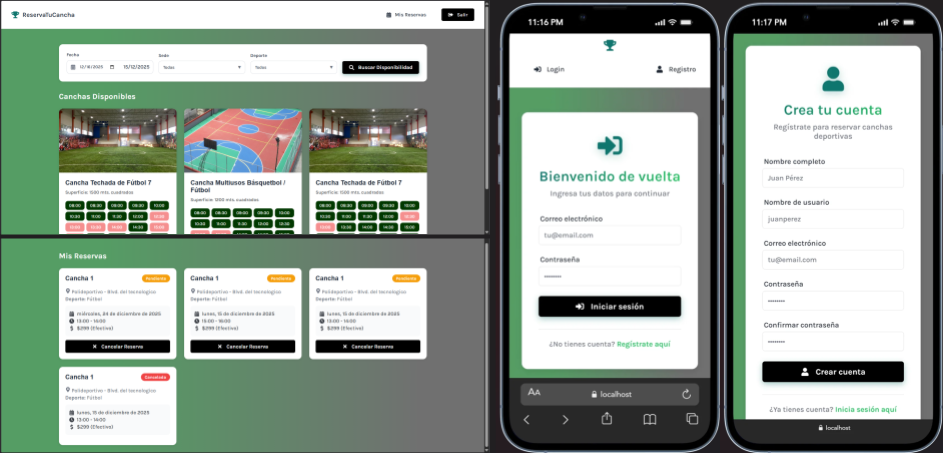
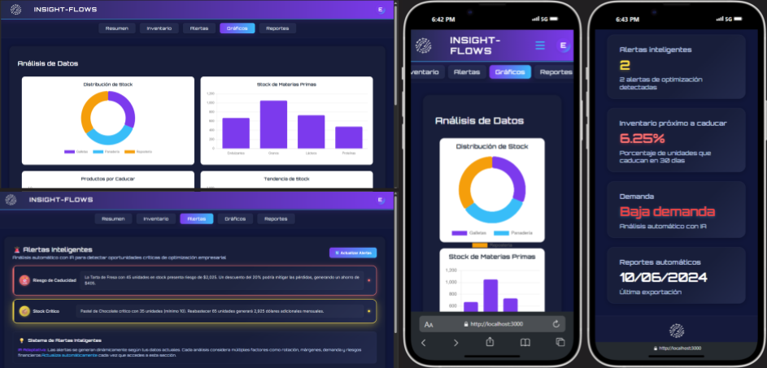

proyectos

NEWs
Página web inteligente que implementa la automatización de un Newsletter y la obtención y reescritura con IA de noticias sobre tecnología y negocios. Elaborada para el Hackaton Botbi 2026.
React
TypeScript
Node.js
Next
MongoDB

ChambApp
Aplicación móvil de Android que conecta clientes con trabajadores y emprendedores de servicios locales, ofrece una interfaz sencilla e intuitiva además de integrar un chat, geolocalización y sistema de reseñas. Elaborada en la etapa regional del HackaTecNM2025.
Android
Kotlin
Java
Firebase
Gradle

SKAAN
Aplicación móvil inteligente que utiliza la cámara del dispositivo para escanear, identificar y clasificar envases con líquidos en tiempo real. El sistema determina automáticamente si un envase cumple con las regulaciones de seguridad aeroportuaria. Desarrollada en el HackMTY2025 como solución al problema "Smart Execution" presentado por Gate Group.
Flutter
Dart
Firebase
Python
GeminiAI

Tenis OSWI
Página web que simula una tienda de tenis en línea, realizada como proyecto de práctica para aprender conceptos básicos de programación web: listado de productos, carrito de compras simulado, y páginas de login y contacto. Elaborada durante el curso de Programación Web.
HTML
PHP
CSS
JavaScript
MariaDB

Reserva tu Cancha
Aplicación web fullstack desarrollada para la reservación de canchas deportivas por horario. El sistema permite a los usuarios consultar disponibilidad, realizar reservaciones con pago ficticio y visualizar su historial. Proyecto final del curso de Desarrollo Fullstack I.
MongoDB
Oracle Cloud
React
Node.js
JavaScript

InsightFlows
Plataforma web moderna para la gestión inteligente de inventarios que combina análisis de datos en tiempo real con Inteligencia Artificial. El sistema proporciona alertas predictivas, análisis de demanda automatizado y visualización de tendencias. Proyecto creado para el hackathon HackaTecNM en su etapa local.
React
Node.js
JavaScript
MariaDB
GeminiAI